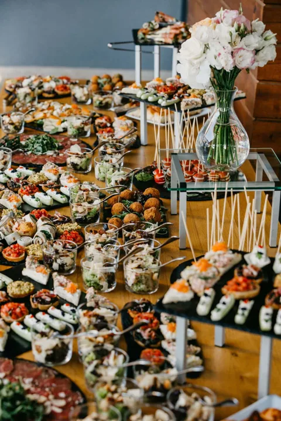

Crepes
Crepe francês e no cone neste exemplo de cardápio.
CIDADE EXEMPLO · EVENTOS SOCIAIS E CORPORATIVOS
Crepes, massas, churrasco e coquetel. Conheça os serviços do Mesa Viva e converse com a equipe sobre o seu evento.
Pedir orçamento no WhatsApp ↗
OS SERVIÇOS
Crepe francês e no cone neste exemplo de cardápio.
Festa e estação de massas para conversar sobre o seu evento.
Consulte cortes, acompanhamentos e estrutura necessária.
Conheça os formatos e as opções disponíveis com a equipe.
REGISTROS DO MESA VIVA


VAMOS CONVERSAR
Com essas informações, a equipe pode começar a conversar sobre as opções para sua festa.
WhatsApp · Contato de demonstração ↗